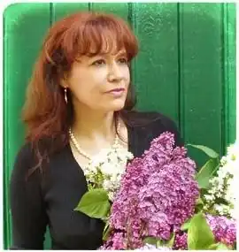

Поет, перекладач, член Національної спілки письменників України.
Народилася 18 грудня 1959 року на Житомирщині. Дитинство пройшло в старовинному селищі Смотрич на Поділлі.
1983 року Н.В. Горішна з червоним дипломом закінчила інженерно-оптичний факультет Чернівецького державного університету. Працювала інженером, викладачем, програмістом. Вірші пише з дитинства. Перша публікація була – п'ятикласницею в районній газеті "Ленінським шляхом". Школяркою двічі друкувалася в республіканському журналі "Піонерія". Живе в Черкасах з 1982 року. Наьалія Горішна працює у жанрах поезії, поетичного перекладу, літературних пародій. Перша збірка "Бджола на асфальті" побачила світ 2006 року. Потім були збірки "Розп'яття осені" (2007), "Совість. Переклади з Володимира Нарбута", "Право на весну", "Сутність. Поезії у стилі хоку" (2008), "Гусінь янголів. Переклади", "Горішина. Автопереклади" (2009), "Різдвяне Немовля. Переклади", "Поет у спідниці. Літературні пародії" (2010), "Під сонцем серця" (2011), книга для дітей "Дочекалися! Ура!!!" (2012), "Тарас Шевченко. Тризна. В перекладі Наталії Горішної" (2015), "Люблю" та "Звинувачена в почуттях. Обрана інтимна лірика" (2017). Наталія Володимирівна як керівник дитячого літературно-творчого гуртка "Пегасик", що діє при Черкаській обласній бібліотеці для дітей, підготувала п'ять книжечок з творами своїх вихованців. Книжечки мають назву ""Пегасик" і пегасівці" (2011, 2012, 2013, 2014 (два випуски)). Письменниця постійно співпрацює з журналами для дітей та юнацтва: "Веселі картинки (українською мовою)" – як перекладач; "Веселі уроки" – веде рубрику "Сторінки ерудитів"; "Весела перерва" – як перекладач та автор шкільних "запам'яталок". Наталія Володимирівна Горішна є лауреатом Всеукраїнських літературних премій імені Василя Симоненка (2012 р. за книгу поезій "Під сонцем серця") та Олександра Олеся (2017 р. за книгу поезій "Люблю").